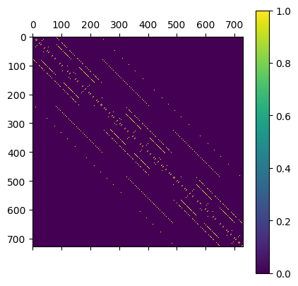
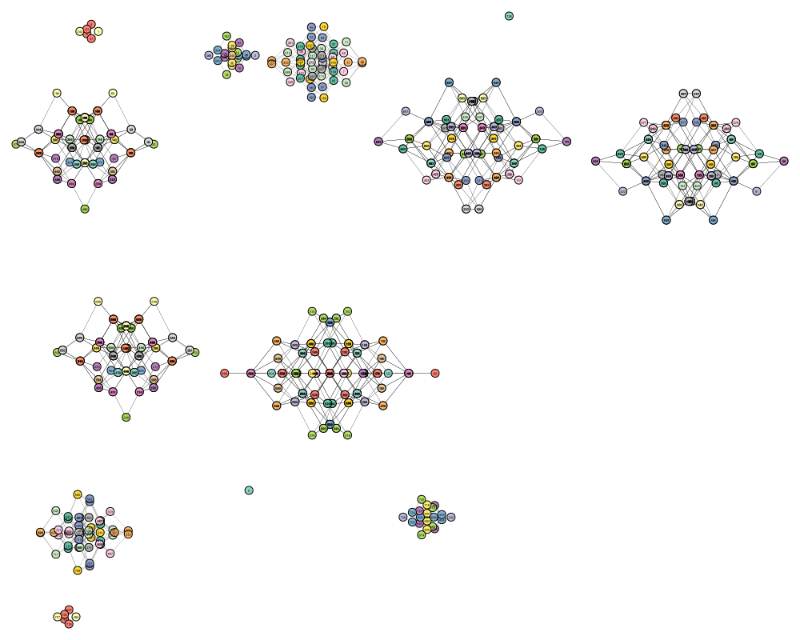

[1]:
import igraph
import matplotlib.colors as mcolors
import matplotlib.pyplot as plt
import networkx as nx
import numpy as np
import pandas as pd
import pynauty
from scipy.linalg import ishermitian
from scipy.sparse.csgraph import connected_components
from sympy.combinatorics import Permutation, PermutationGroup
from qlinks.model.spin1_xy_model_1d import Spin1XYModel
from utils import setup_igraph
np.set_printoptions(threshold=np.inf)
pd.set_option("display.max_rows", None)
[ ]:
Spin-1 XY model#
Size of Hilbert space: \(3^n\)
\(n\) |
2 |
3 |
4 |
5 |
6 |
7 |
8 |
9 |
10 |
11 |
|---|---|---|---|---|---|---|---|---|---|---|
\(N_H\) |
9 |
27 |
81 |
243 |
729 |
2187 |
6561 |
19683 |
59049 |
177147 |
[22]:
coup_j, coup_h, coup_d, coup_j3 = (1, 0, 0, 1)
model = Spin1XYModel(6, coup_j, coup_h, coup_d, coup_j3, periodic=False)
mat = model.hamiltonian.toarray()
assert ishermitian(mat)
evals, evecs = np.linalg.eigh(mat)
plt.matshow(mat)
plt.colorbar()
[22]:
<matplotlib.colorbar.Colorbar at 0x130432e50>

[ ]:
plt.plot(evals, linestyle="--", marker="o")
plt.grid()
[ ]:
model.basis.loc[np.array([179, 197, 185, 143, 203, 221, 227, 223, 209, 229, 235, 237, 155, 231, 157, 213, 77, 159, 79, 133, 53, 107, 71, 187, 125, 205, 149, 131, 211, 151])]
[ ]:
model.parity
[ ]:
np.allclose(model.parity @ model.kinetic_term + model.kinetic_term @ model.parity, 0, atol=1e-12)
[ ]:
evecs_df = pd.DataFrame.from_dict(
{
"eval": evals,
"kin": [(evec.T @ model.kinetic_term @ evec).item() for evec in evecs.T],
"pot": [(evec.T @ model.potential_term @ evec).item() for evec in evecs.T],
"pot2": [(evec.T @ model.potential_term2 @ evec).item() for evec in evecs.T],
# "kin^2": [(evec.T @ model.kinetic_term @ model.kinetic_term @ evec).item() for evec in evecs.T],
# "pot^2": [(evec.T @ model.potential_term @ model.potential_term @ evec).item() for evec in evecs.T],
}
)
evecs_df[evecs_df["kin"].abs() < 1e-12]
[ ]:
3 ** model.n - np.linalg.matrix_rank(model.kinetic_term.toarray())
[ ]:
i = 73
plt.plot(evecs[:, i].T, linestyle="--", marker="o", color="red")
plt.grid()
np.where(evecs[:, i] < -1e-6)[0]
[23]:
g = nx.from_scipy_sparse_array(model.kinetic_term)
ig = igraph.Graph.from_networkx(g)
ntg = pynauty.Graph(
ig.vcount(),
directed=True,
adjacency_dict=nx.to_dict_of_lists(g),
)
aut_gp = pynauty.autgrp(ntg)[0]
perm_gp = PermutationGroup([Permutation(p) for p in aut_gp])
[24]:
g = nx.from_scipy_sparse_array(model.kinetic_term)
highlight = [
# np.where(np.abs(evecs[:, 231]) > 1e-6)[0],
]
# highlight = list(aut.degree_partition.values())
highlight = perm_gp.orbits()
# highlight = list(nx.bipartite.sets(g))
# highlight_color = list(mcolors.TABLEAU_COLORS.values())
# highlight_color = list(mcolors.CSS4_COLORS.values())
cmap = plt.get_cmap('Set3')
highlight_color = [mcolors.to_hex(cmap(i)) for i in range(cmap.N)]
cmap = plt.get_cmap('Set2')
highlight_color += [mcolors.to_hex(cmap(i)) for i in range(cmap.N)]
highlight_color *= 2000
# highlight_color = [
# "dimgray",
# "whitesmoke",
# "deepskyblue",
# "yellowgreen",
# "aqua",
# "pink",
# "tomato",
# "royalblue",
# "blueviolet",
# "cornflowerblue",
# "limegreen",
# ]
ig = setup_igraph(g, highlight, highlight_color)
degree = np.array(list(dict(g.degree).values()))
# (bipartite, types) = ig.is_bipartite(return_types=True)
# nodes = [int(n) for n in list(sub_sub_ig.vs["label"])]
# outer_boundary = list(nx.node_boundary(g, nodes))
# sub_ig = ig.induced_subgraph(np.append(nodes, outer_boundary))
# sub_ig = ig.induced_subgraph(np.where(degree == 8)[0])
# fig, ax = plt.subplots(figsize=(6, 6), facecolor="white")
igraph.plot(
ig,
# layout=ig.layout_kamada_kawai(),
# layout=ig.layout_reingold_tilford(root=[0, 25, 50, 75]),
# layout=ig.layout_bipartite(types=types),
layout=ig.layout_mds(),
vertex_size=10,
vertex_label_size=4,
# vertex_label_dist=1.5,
edge_width=0.2,
# edge_color="darkgray",
# target="xy_graph_pbc_4.svg"
bbox=(1000,800),
)
[24]:

[25]:
sub_components = ig.connected_components(mode="weak")
for i, c in enumerate(sub_components):
mat = nx.to_numpy_array(ig.subgraph(c).to_networkx())
# print(repr(mat))
print(i, mat.shape[0], mat.shape[0] - np.linalg.matrix_rank(mat), nx.is_bipartite(ig.subgraph(c).to_networkx()))
# print(np.diagonal(mat))
0 1 1 True
1 6 2 True
2 21 5 True
3 50 8 True
4 90 14 True
5 126 16 True
6 141 19 True
7 126 16 True
8 90 14 True
9 50 8 True
10 21 5 True
11 6 2 True
12 1 1 True
[ ]:
sub_ig = ig.subgraph(sub_components[3])
igraph.plot(
sub_ig,
layout=sub_ig.layout_fruchterman_reingold(),
# layout=sub_ig.layout_kamada_kawai(),
# layout=ig.layout_reingold_tilford(root=[0, 25, 50, 75]),
# layout=ig.layout_bipartite(types=types),
vertex_size=18,
vertex_label_size=8,
# vertex_label_dist=1.5,
edge_width=0.2,
# edge_curved=0.1,
# edge_color="darkgray",
bbox=(200,300),
# target="xy_graph_pbc_5_sz-2.svg"
)
[ ]:
g2 = nx.to_numpy_array(sub_ig.to_networkx())
highlight = list(nx.bipartite.sets(nx.from_numpy_array(g2)))
g2 = nx.from_numpy_array(np.linalg.matrix_power(g2, 2))
ig2 = setup_igraph(g2, highlight, ["dimgray", "whitesmoke"])
igraph.plot(
ig2,
# layout=g2.layout_kamada_kawai(),
# layout=ig.layout_reingold_tilford(root=[0, 25, 50, 75]),
# layout=ig.layout_bipartite(types=types),
vertex_size=24,
vertex_label_size=12,
# vertex_label_dist=1.5,
edge_width=0.2,
# edge_color="darkgray",
bbox=(300,300),
# target="bipartite_proj2.svg"
)
[ ]:
two_step_mat = np.linalg.matrix_power(nx.to_numpy_array(sub_ig.to_networkx()), 2)
n_components, labels = connected_components(
two_step_mat, directed=False, connection="weak", return_labels=True
)
for i in range(n_components):
mask = (labels == i)
sub_mat = two_step_mat[np.ix_(mask, mask)]
print(sub_mat.shape[0], sub_mat.shape[0] - np.linalg.matrix_rank(sub_mat))
[ ]:
mask = (labels == 0)
sub_mat = two_step_mat[np.ix_(mask, mask)]
np.linalg.eigh(sub_mat)[1]
[ ]:
[ ]:
df = pd.read_csv("spin1_xy_scars.csv", usecols=["n", "periodic", "sz", "nullity"])
pd.pivot_table(
df,
index=["n", "periodic"],
columns=["sz"],
values="nullity",
aggfunc="sum"
)
[ ]: